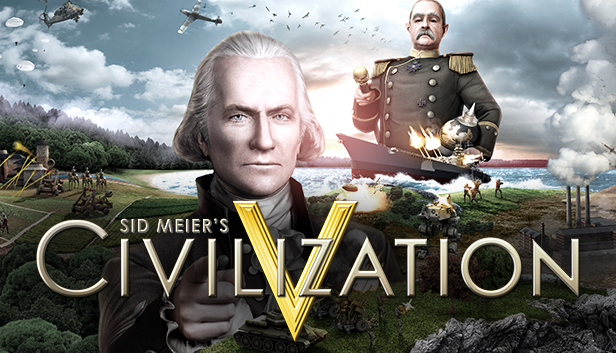

Might and Magic: Heroes VI

Might and Magic Heroes VI (рус. «Меч и Магия: Герои VI») – компьютерная игра в жанре пошаговой стратегии с элементами RPG, шестая часть серии. Разработана компанией Black Hole Entertainment и выпущена компанией Ubisoft Entertainment 13 октября 2011 года. Локализатором в России является компания «Бука».
Подробнее
Sid Meier's Civilization V

Sid Meier’s Civilization V — компьютерная игра в жанре пошаговой стратегии, пятая часть в серии Civilization. Игра разработана компанией Firaxis и её первый выпуск состоялся 21 сентября 2010 года для Microsoft Windows в США; для Mac OS X игра была выпущена 23 ноября 2010 года.
Подробнее